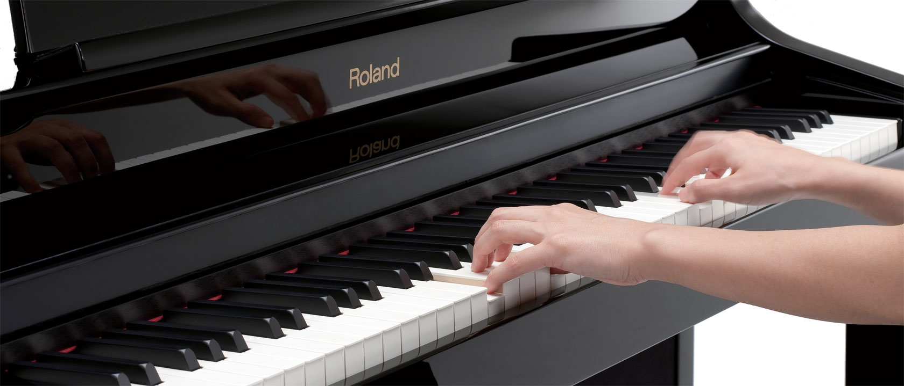

A musical keyboard is the set of adjacent depressible levers or keys on a musical instrument. Keyboards typically contain keys for playing the twelve notes of the Western musical scale, with a combination of larger, longer keys and smaller, shorter keys that repeats at the interval of an octave.